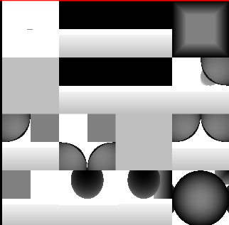
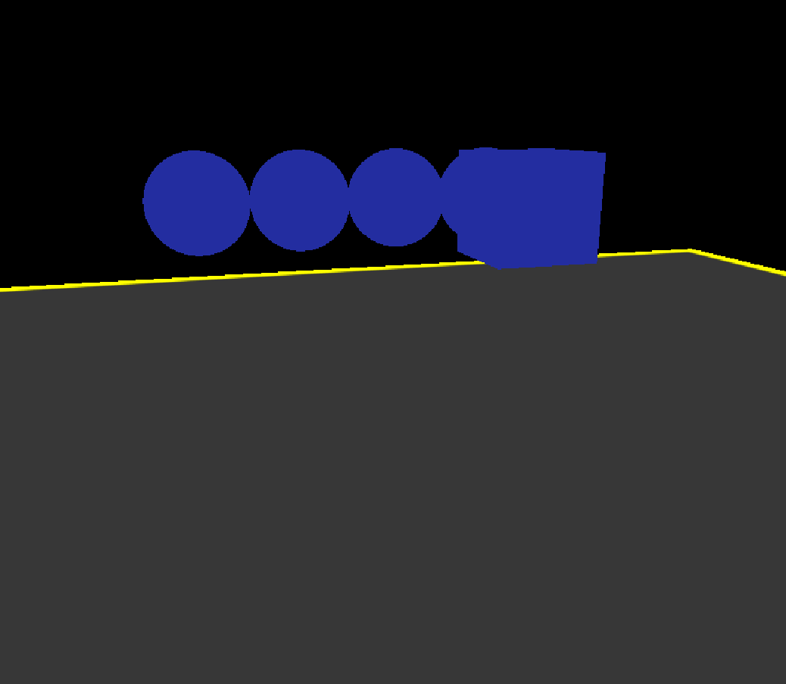
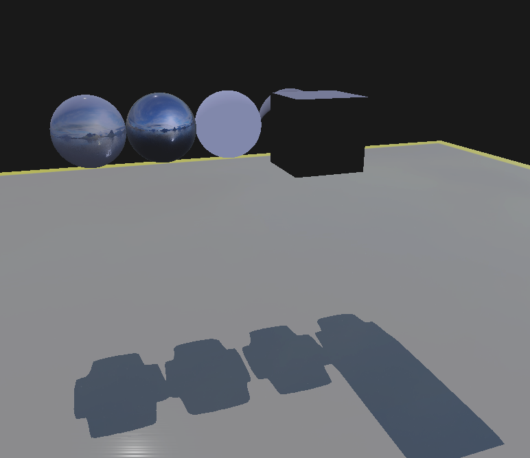
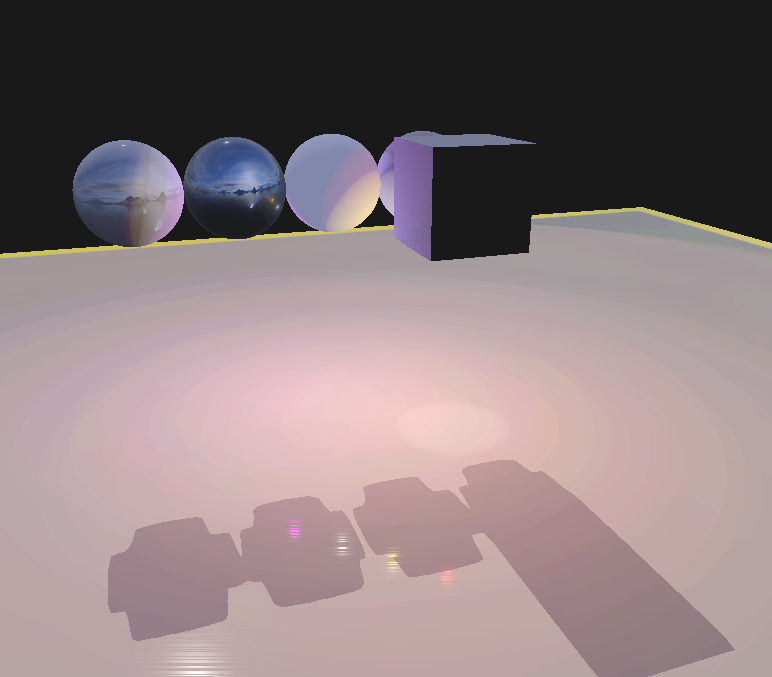
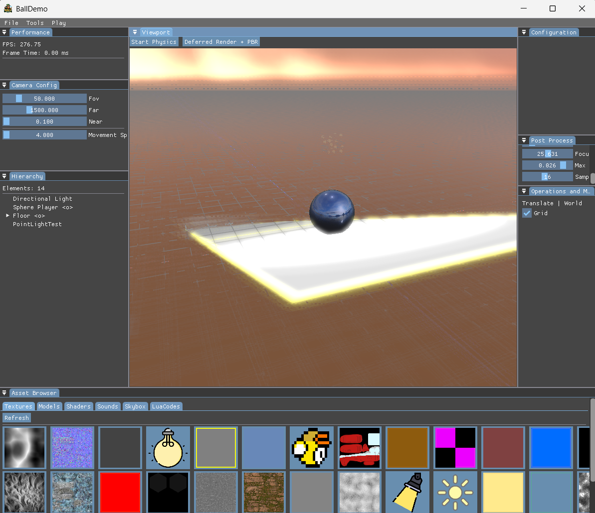
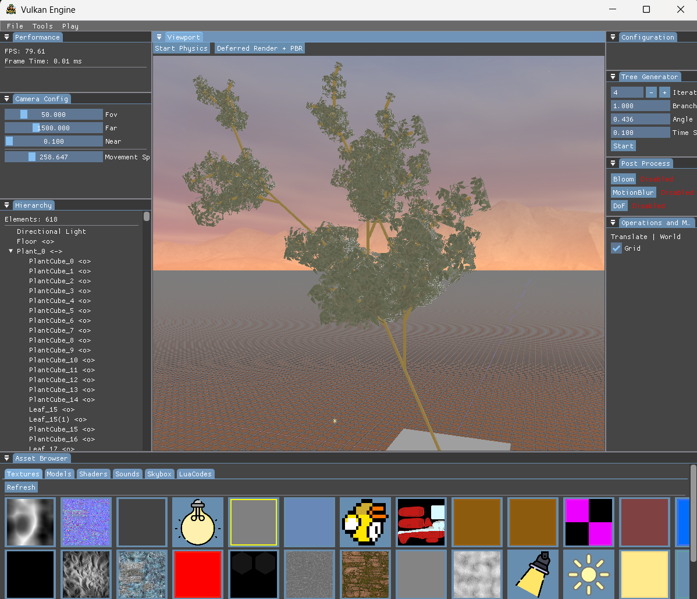
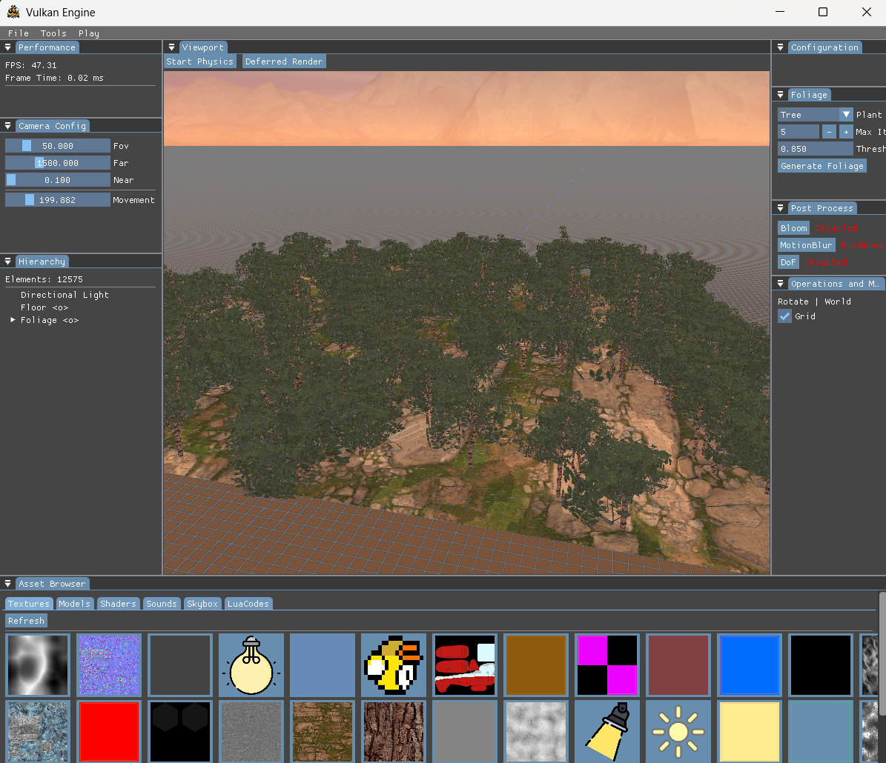
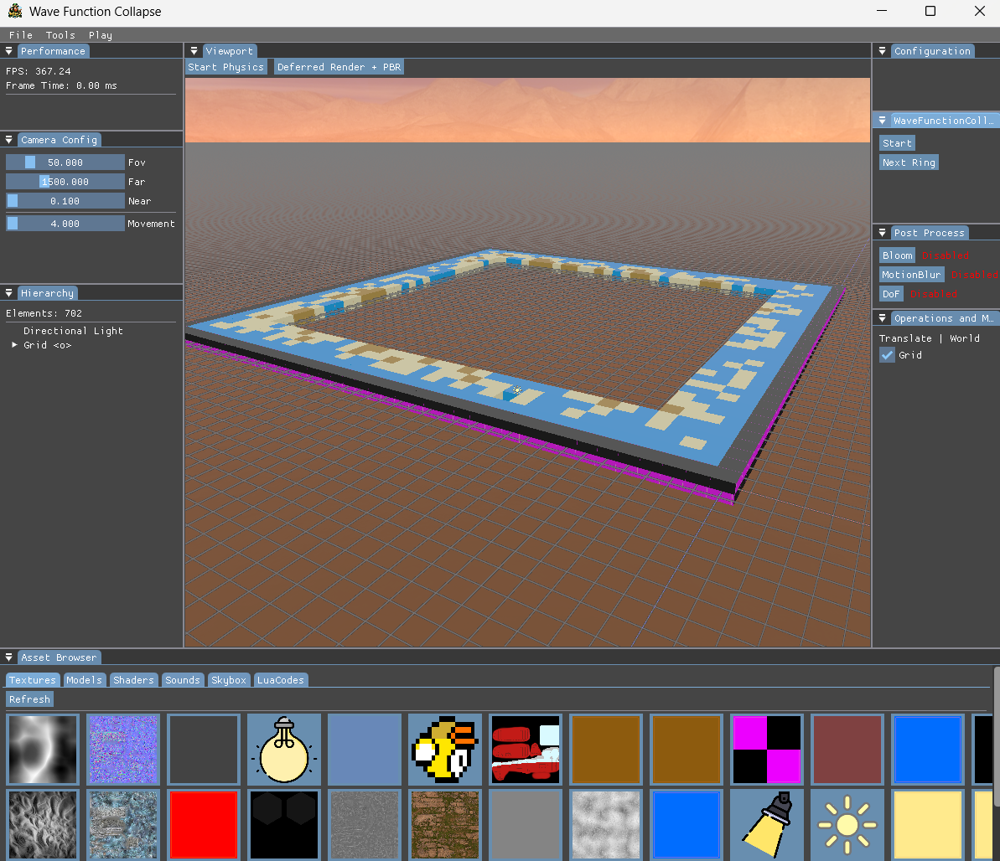
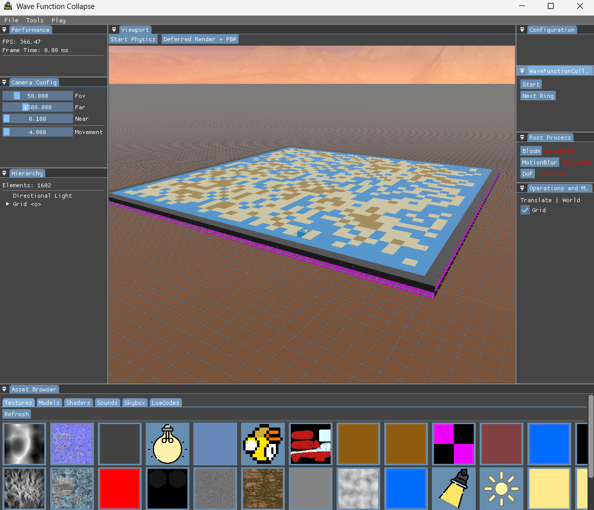

// 01 — overview
What is this project?
Graphics engine built with Vulkan (and OpenGL), featuring PhysX 5 integration, a custom rendering
system, Lua scripting, and an ECS architecture, limited version on Android Studio. Includes a custom editor
powered by ImGui. Academic project for ESAT.
The project was split between Vulkan and OpenGL. I was responsible for the full Vulkan side: ECS, PhysX, ImGui, Android port, and all rendering systems.
// 02 — Beyond the Surface
System Design
The engine is built around an Entity Component System, supported by a Job System for asynchronous model and
texture loading.
It is structured into shared classes and API-specific ones for Vulkan and OpenGL.
std::vector<std::pair<size_t, T>> entityList_; /// Entity - component realtion list
Without the map, finding a specific entity's component would require scanning the entire vector: O(n). With it,
lookup by ID is O(1), while the vector stays contiguous for bulk system iteration. Best of both worlds: fast
individual access and cache-friendly loops.
std::vector<std::pair<size_t, T>> entityList_ ; /// Entity - component realtion list
std::unordered_map<size_t, size_t> entityIdToIndexMap_; /// For optimization
// Use
size_t index = entityIdToIndexMap_[entityID];
T* comp = &entityList_[index].second; // acceso directo
Components are stored in a contiguous vector. When a system iterates over all components of one type, the CPU
can load several in the same cache line at once. With pointer-based OOP, each access jumps to an arbitrary
memory address, constantly invalidating the cache. This is one of the main reasons ECS outperforms classic
object-oriented design in performance.
class HTML {
public:
HTML();
HTML(int width, int height, std::string windowName, std::string facesCubeMap[6] = {});
.
.
.
private:
private:
std::unique_ptr<ECSManager> ecsManager_; /// The manager of the entities
std::unique_ptr<Jobsystem> jobSystem_; /// System for threading
// EXECUTION
std::unique_ptr<ScriptSystem> scriptSystem_; /// System for scripting
std::unique_ptr<CameraSystem> cameraSystem_; /// System for camera
std::shared_ptr<Input> inputController_; /// Controller for input
std::unique_ptr<PlantGeneratorSystem> plantGeneratorSystem_; /// System for generating plants
.
.
.
// PAWNS
std::shared_ptr<PhysXPawnController> pawnController_;
// WRAPPERS
std::unique_ptr<ImGuiWrapper> imguiWrapper_;
PhysX physXWrapper_; /// Wrapper for all PhysX elements
std::unique_ptr<VulkanWrapper> vkWrapper_;
std::unique_ptr<ActorManager> actorManager_;
std::unique_ptr<RenderManager> renderManager_;
}
Separation of concerns through systems. CameraSystem, ScriptSystem, RenderManager, PlantGeneratorSystem — each
subsystem has its own class, and HTML orchestrates them without implementing them.
html.InitializeSystems(HTML::kPawnType::kCustom);
auto startTime = std::chrono::high_resolution_clock::now();
auto currentTime = std::chrono::high_resolution_clock::now();
auto lastTimeDuration =
std::chrono::duration<float, std::chrono::seconds::period>(startTime - currentTime).count();
while (!html.ShouldClose()) {
html.PollEvents();
auto newTime = std::chrono::high_resolution_clock::now();
float frameTime =
std::chrono::duration<float, std::chrono::seconds::period>(newTime - currentTime).count();
lastTimeDuration += frameTime;
currentTime = newTime;
frameTime = glm::min(frameTime, 60.0f);
html.PreUpdateApp(frameTime);
// update
html.UpdateInput();
html.ResetInput();
html.UpdatePawn(frameTime);
// User update things
// render functions
html.Render();
html.BaseImGui();
// User ImGui
html.EndImGui();
html.EndRender();
// PHYSX
html.StepPhysics(frameTime);
}
html.Finish();
Typical game loop to simplify the user's main entry point. The user only interacts with the HTML class.
Render
void RenderManager::InitRenderProcess(FrameInfo& frameInfo, int stepLight, glm::vec3 dirPosReference)
{
switch (renderMode_)
{
case ImGuiWrapper::kForward:
forwardSystem_->RenderShadowMap(ecsManager_,
frameInfo,
dirPosReference, stepLight);
break;
case ImGuiWrapper::kDeferred:
if (scenesExtent_[0].x > 0.0f && scenesExtent_[0].y > 0.0f) {
deferredSystem_->RenderShadowMap(ecsManager_,
frameInfo,
dirPosReference, stepLight);
if (stepLight == 0) {
deferredSystem_->RenderToGBuffer(ecsManager_,
frameInfo,
{ (uint32_t)scenesExtent_[0].x, (uint32_t)scenesExtent_[0].y });
deferredSystem_->BlitDepthToMain(
frameInfo.commandBuffer,
vkWrapper_.GetOffScreenDepthImage(),
{ (uint32_t)scenesExtent_[0].x, (uint32_t)scenesExtent_[0].y });
}
}
break;
case ImGuiWrapper::kDeferredPBR:
if (scenesExtent_[0].x > 0.0f && scenesExtent_[0].y > 0.0f) {
deferredSystemPBR_->RenderShadowMap(ecsManager_,
frameInfo, dirPosReference, stepLight);
if (stepLight == 0) {
deferredSystemPBR_->RenderToGBuffer(ecsManager_,
frameInfo,
{ (uint32_t)scenesExtent_[0].x, (uint32_t)scenesExtent_[0].y });
deferredSystemPBR_->BlitDepthToMain(
frameInfo.commandBuffer,
vkWrapper_.GetOffScreenDepthImage(),
{ (uint32_t)scenesExtent_[0].x, (uint32_t)scenesExtent_[0].y });
}
}
break;
default:
break;
}
// Start to record draws
if (scenesExtent_[0].x > 0.0f) {
if ((renderMode_ == ImGuiWrapper::kDeferred ||
renderMode_ == ImGuiWrapper::kDeferredPBR) && stepLight == 0)
vkWrapper_.BeginOffScreenRenderPassDeferred(frameInfo, (float)scenesExtent_[0].x,
(uint32_t)scenesExtent_[0].y);
else
vkWrapper_.BeginOffScreenRenderPass(frameInfo, (float)scenesExtent_[0].x,
(uint32_t)scenesExtent_[0].y,
((stepLight != 0 && renderMode_ != ImGuiWrapper::kSimpleRender) ? false : true));
}
}
At the start of the render process, the shadow map and G-Buffer are prepared, keeping everything separated into
small, debuggable steps. The stepLight parameter distributes shadows across different atlas slots.

void RenderManager::RenderObjects(FrameInfo& frameInfo, int stepLight, glm::vec3 dirPosReference) {
if (scenesExtent_[0].x <= 0.0f || scenesExtent_[0].y <= 0.0f) {
return;
}
vkWrapper_.SetViewport(frameInfo, scenesExtent_[0].x, scenesExtent_[0].y);
switch (renderMode_)
{
case ImGuiWrapper::kForward:
forwardSystem_->RenderGameObjects(ecsManager_, frameInfo, dirPosReference, stepLight);
break;
case ImGuiWrapper::kDeferred:
deferredSystem_->RenderLightingPass(frameInfo, ecsManager_, dirPosReference, stepLight);
break;
case ImGuiWrapper::kDeferredPBR:
deferredSystemPBR_->RenderLightingPass(frameInfo, ecsManager_, dirPosReference, stepLight);
break;
case ImGuiWrapper::kSimpleRender:
default:
simpleRenderSystem_->RenderGameObjects(ecsManager_, frameInfo);
break;
}
}
The lighting pass is executed in the systems that require it, after the shadow map and geometry buffer have
been generated. Finally, all objects are rendered.



All these images are being visualized via RenderDoc, a program that I started learning while developping this
project.
.
.
.
Texture* outputTexture = nullptr;
VkImageView viewbase = vkWrapper_.sceneTarget_.view;
VkSampler sampler = vkWrapper_.sceneTarget_.sampler;
if (postProcess_["MotionBlur"]->enabled) {
velocityPassSystem_->Render(
ecsManager_, frameInfo,
currentViewProj_, prevViewProj_,
prevWorldTransforms_);
Texture* velTex = velocityPassSystem_->GetOutput();
if (velTex) {
motionBlurSystem_->Apply(
frameInfo.commandBuffer,
viewbase,
sampler,
velTex->getImageView(),
velTex->getSampler(),
*frameInfo.frameDescriptorPool,
*(std::static_pointer_cast<MotionBlurSettings>(postProcess_["MotionBlur"])));
Texture* mbOutput = motionBlurSystem_->GetOutput();
if (mbOutput) {
BlitTexture(mbOutput, frameInfo);
.
.
.
viewbase = mbOutput->getImageView();
sampler = mbOutput->getSampler();
}
}
}
if (postProcess_["DoF"]->enabled && dofSystem_)
{
auto& dofSettings = *(std::static_pointer_cast<DoFSettings>(postProcess_["DoF"]));
dofSystem_->SetCameraPlanes(camNear, camFar);
dofSystem_->Apply(
frameInfo.commandBuffer,
viewbase, sampler,
vkWrapper_.GetOffScreenDepthView(),
vkWrapper_.GetOffScreenDepthSampler(),
*frameInfo.frameDescriptorPool,
dofSettings);
Texture* dofOut = dofSystem_->GetOutput();
if (dofOut) {
BlitTexture(dofOut, frameInfo);
.
.
.
viewbase = vkWrapper_.sceneTarget_.view;
sampler = vkWrapper_.sceneTarget_.sampler;
}
}
if (postProcess_["Bloom"]->enabled) {
bloomSystem_->Apply(
frameInfo.commandBuffer,
viewbase,
sampler,
*frameInfo.frameDescriptorPool,
*(std::static_pointer_cast<BloomSettings>(postProcess_["Bloom"]))
);
outputTexture = bloomSystem_->GetOutput();
if (outputTexture) BlitTexture(outputTexture, frameInfo);
}
.
.
.
vkCmdPipelineBarrier(
frameInfo.commandBuffer,
VK_PIPELINE_STAGE_FRAGMENT_SHADER_BIT,
VK_PIPELINE_STAGE_EARLY_FRAGMENT_TESTS_BIT,
0, 0, nullptr, 0, nullptr, 1, &depthRestoreBarrier);
.
.
.
The chained post-process pipeline is the most sophisticated part. Each effect consumes the previous one's
output via BlitTexture and redirects viewbase/sampler, forming a MotionBlur → DoF → Bloom chain over the same
sceneTarget_.

Simple Plant Generator
std::vector<char> PlantGeneratorSystem::GetPlant(kType type, size_t iterations)
{
std::vector<char> result;
switch (type)
{
case PlantGeneratorSystem::kPlant:
result = { '-', 'X' };
for (size_t i = 0; i < iterations; i++) {
std::vector<char> newVector;
for (char node : result) {
switch (node)
{
case 'X':
if (rand() % 2) {
AppendString(newVector, "F+[[X]-X]-F[-FX]+X");
}
else {
AppendString(newVector, "F-[[X]+X]+F[+FX]-X");
}
break;
case 'F':
AppendString(newVector, "FF");
break;
default:
newVector.push_back(node);
break;
}
}
result.clear();
result = newVector;
}
break;
case PlantGeneratorSystem::kTree:
// ... other types follow the same pattern
break;
case PlantGeneratorSystem::kStochasticTree:
result = { 'X' };
for (size_t i = 0; i < iterations; i++) {
std::vector<char> newVector;
newVector.reserve(result.size() * 5);
for (char node : result) {
switch (node) {
case 'X': {
int r = rand() % 100;
if (r < 40) {
AppendString(newVector, "FF[+X][-X]X");
} else if (r < 70) {
AppendString(newVector, "F[+X]F[-X]+X");
} else if (r < 90) {
AppendString(newVector, "F[\\X][/X]FX");
} else {
AppendString(newVector, "FX");
}
break;
}
case 'F':
AppendString(newVector, "FF");
break;
default:
newVector.push_back(node);
break;
}
}
result = std::move(newVector);
}
break;
case PlantGeneratorSystem::kSymmetricTree:
// ... other types follow the same pattern
break;
case PlantGeneratorSystem::kSpiralTree:
// ... other types follow the same pattern
break;
default:
break;
}
return result;
}
A symbol alphabet (F, X, +, -, [, ], &, ^, \) that expands iteratively by applying rewriting rules. Five
distinct plant types with different generation patterns.

Foliage Generator
void PopulateForest(HTML* html, float threshold, PlantGeneratorSystem::kType type, int iterations)
{
size_t Foliage = html->AddActor("Foliage", "", 0, glm::vec3(), glm::vec3(), glm::vec3(1.0f));
std::vector<char> plant;
glm::vec3 currentPos(0.0f, 0.0f, 0.0f);
glm::vec3 currentRot(0.0f, 0.0f, 0.0f);
float stepLength = 1.0f;
float angleStep = glm::radians<float>(25.0f);
int cubeCount = 0;
std::string parentPlant = "Plant";
int plantsCreated = 0;
size_t step = 0;
float timeStep = 0.1f;
std::stack<PlantGeneratorSystem::TransformState> stateStackPlant;
std::stack<PlantGeneratorSystem::TransformStateTree> stateStackTree;
bool startedTree = false;
float noiseScale = 0.25f;
float seed = static_cast<float>(rand() % 1000);
switch (type)
{
.
.
.
case PlantGeneratorSystem::kTree:
for (int x = 0; x < 80; x++) {
for (int y = 0; y < 80; y++) {
float noiseValue = SimplexNoise::noise(x * noiseScale, y * noiseScale, seed);
float normalizedNoise = (noiseValue + 1.0f) * 0.5f;
if (normalizedNoise > threshold) {
float offsetX = ((rand() % 100) / 100.0f) - 0.5f;
float offsetY = ((rand() % 100) / 100.0f) - 0.5f;
currentPos = { (x - 40.0f) + offsetX, 0.0f, (y - 40.0f) + offsetY };
if ((rand() % 100) > 30) {
parentPlant = "Tree_" + std::to_string(plantsCreated++);
size_t parentPlantId = html->AddActor(parentPlant, "", Foliage,
glm::vec3(), glm::vec3(), glm::vec3(1.0f));
plant = html->GetPlantGeneratorSystem()
.GetPlant(PlantGeneratorSystem::kType::kTree, iterations);
currentRot.y = static_cast<float>(rand() % 360) * (3.14159f / 180.0f);
int newIteration = (rand() + 2) % iterations;
LoadTreeFull(html, plant, currentPos, currentRot, stepLength,
angleStep, cubeCount, stateStackTree, parentPlantId, newIteration);
}
}
}
}
break;
.
.
.
}
}
A forest generation using Perlin and the previous PlantGeneratorSystem.

Wave Function Collapse
void GenerateRules() {
rules[kTiles::kEmpty] = { kTiles::kWater };
rules[kTiles::kWater] = { kTiles::kWater, kTiles::kSand };
rules[kTiles::kSand] = { kTiles::kWater, kTiles::kSand, kTiles::kDirt };
rules[kTiles::kDirt] = { kTiles::kSand, kTiles::kDirt };
}
void GeneratePossibilities() {
for (size_t i = 0; i < sizeGrid * sizeGrid; i++) {
gridPossibilities[i] = { kTiles::kEmpty, kTiles::kWater, kTiles::kSand, kTiles::kDirt };
}
}
std::vector<kTiles> GetAvailableTiles(size_t cell, size_t checkingCell) {
std::vector<kTiles> availableTiles;
for (kTiles tile : gridPossibilities[checkingCell]) {
if (std::find(rules[grid[cell]].begin(), rules[grid[cell]].end(), tile) !=
rules[grid[cell]].end()) {
availableTiles.push_back(tile);
}
}
return availableTiles;
}
void CommitTile(size_t cell, HTML& html) {
std::string tileName = "Tile_" + std::to_string(cell);
size_t cellRow = cell / sizeGrid;
size_t cellCol = cell % sizeGrid;
glm::vec3 tilePosition = {cellCol, 0.0f, cellRow};
std::string texturePath = "";
switch (grid[cell])
{
case kTiles::kEmpty:
case kTiles::kNoData:
texturePath = "../examples/data/Textures/NoTexture.png";
break;
case kTiles::kWater:
texturePath = "../examples/data/Textures/WaterTexture.png";
break;
case kTiles::kSand:
texturePath = "../examples/data/Textures/sandTexture.png";
break;
case kTiles::kDirt:
texturePath = "../examples/data/Textures/dirtTexture.png";
break;
default:
break;
}
gridPossibilities[cell] = { grid[cell] };
// Top
if (cellRow > 0) {
size_t topCell = (cellRow - 1) * sizeGrid + cellCol;
gridPossibilities[topCell] = GetAvailableTiles(cell, topCell);
}
// Bottom
if (cellRow + 1 < sizeGrid) {
size_t bottomCell = (cellRow + 1) * sizeGrid + cellCol;
gridPossibilities[bottomCell] = GetAvailableTiles(cell, bottomCell);
}
// Left
if (cellCol > 0) {
size_t leftCell = cellRow * sizeGrid + cellCol - 1;
gridPossibilities[leftCell] = GetAvailableTiles(cell, leftCell);
}
// Right
if (cellCol + 1 < sizeGrid) {
size_t rightCell = cellRow * sizeGrid + cellCol + 1;
gridPossibilities[rightCell] = GetAvailableTiles(cell, rightCell);
}
}
Some functions that generate rules and collapse tiles inside a grid and change the nearest cells. Simple
implemetation of the wave function collapse technique. In the example the grid is filled ring by ring.

